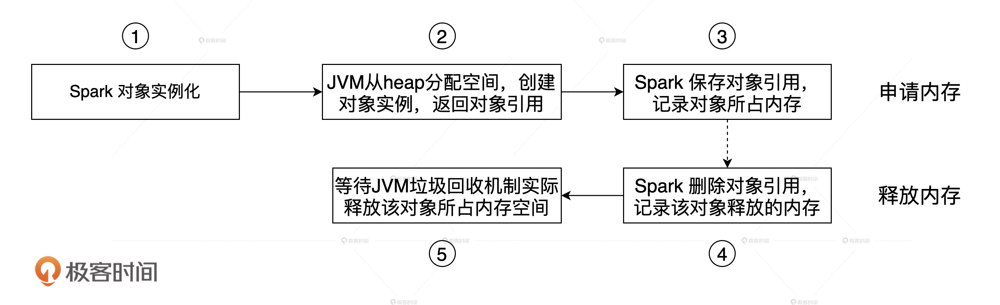
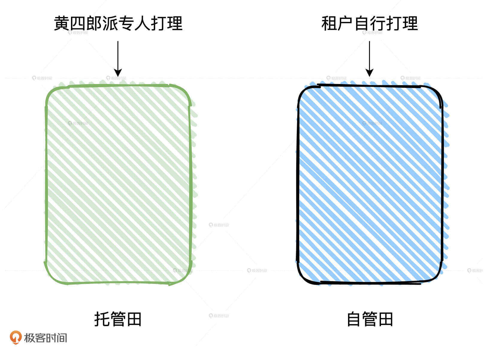
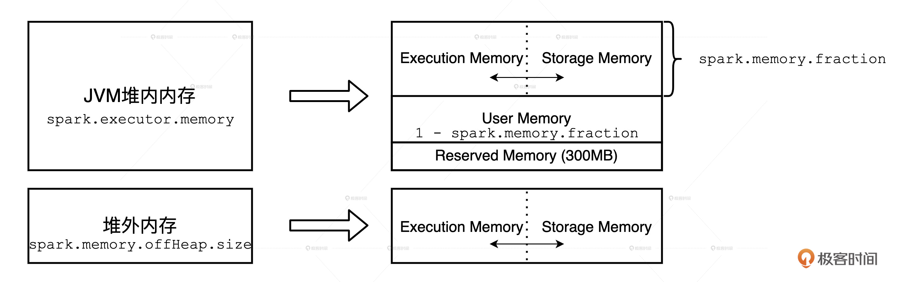
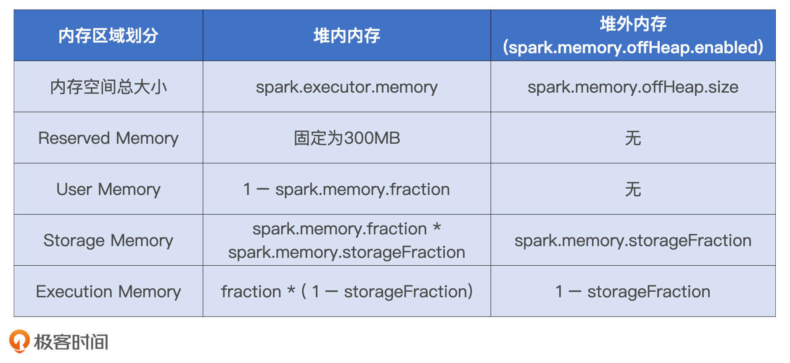
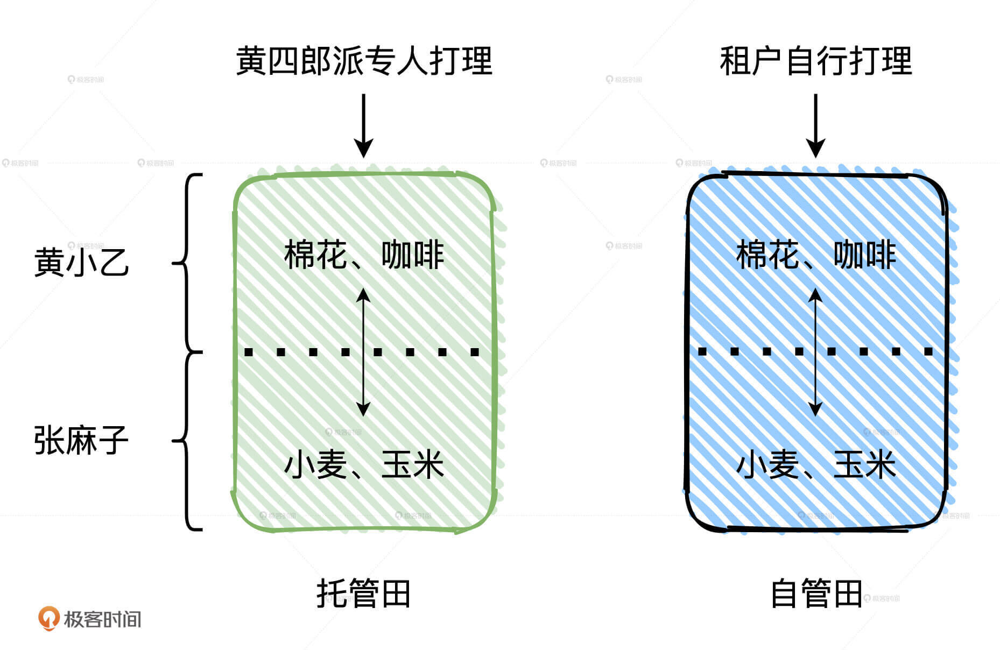
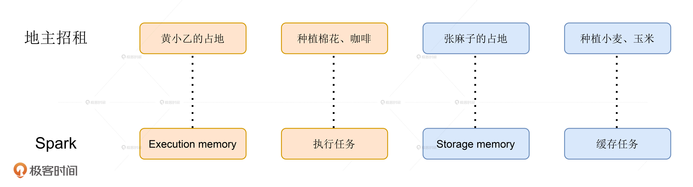
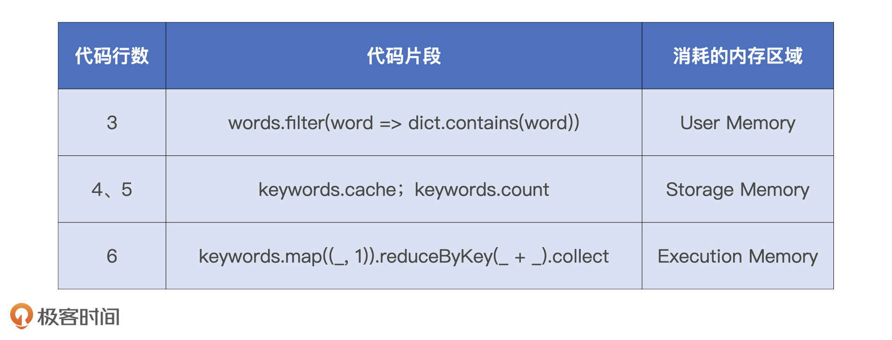
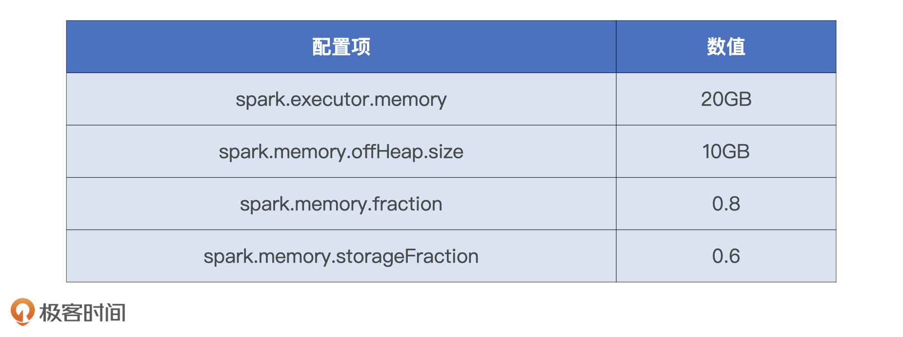

- 00 开篇词 Spark性能调优，你该掌握这些“套路”.md.html
- 01 性能调优的必要性：Spark本身就很快，为啥还需要我调优？.md.html
- 02 性能调优的本质：调优的手段五花八门，该从哪里入手？.md.html
- 03 RDD：为什么你必须要理解弹性分布式数据集？.md.html
- 04 DAG与流水线：到底啥叫“内存计算”？.md.html
- 05 调度系统：“数据不动代码动”到底是什么意思？.md.html
- 06 存储系统：空间换时间，还是时间换空间？.md.html
- 07 内存管理基础：Spark如何高效利用有限的内存空间？.md.html
- 08 应用开发三原则：如何拓展自己的开发边界？.md.html
- 09 调优一筹莫展，配置项速查手册让你事半功倍！（上）.md.html
- 10 调优一筹莫展，配置项速查手册让你事半功倍！（下）.md.html
- 11 为什么说Shuffle是一时无两的性能杀手？.md.html
- 12 广播变量（一）：克制Shuffle，如何一招制胜！.md.html
- 13 广播变量（二）：如何让Spark SQL选择Broadcast Joins？.md.html
- 14 CPU视角：如何高效地利用CPU？.md.html
- 15 内存视角（一）：如何最大化内存的使用效率？.md.html
- 16 内存视角（二）：如何有效避免Cache滥用？.md.html
- 17 内存视角（三）：OOM都是谁的锅？怎么破？.md.html
- 18 磁盘视角：如果内存无限大，磁盘还有用武之地吗？.md.html
- 19 网络视角：如何有效降低网络开销？.md.html
- 20 RDD和DataFrame：既生瑜，何生亮？.md.html
- 21 Catalyst逻辑计划：你的SQL语句是怎么被优化的？（上）.md.html
- 22 Catalyst物理计划：你的SQL语句是怎么被优化的（下）？.md.html
- 23 钨丝计划：Tungsten给开发者带来了哪些福报？.md.html
- 24 Spark 3.0（一）：AQE的3个特性怎么才能用好？.md.html
- 25 Spark 3.0（二）：DPP特性该怎么用？.md.html
- 26 Join Hints指南：不同场景下，如何选择Join策略？.md.html
- 27 大表Join小表：广播变量容不下小表怎么办？.md.html
- 28 大表Join大表（一）：什么是“分而治之”的调优思路？.md.html
- 29 大表Join大表（二）：什么是负隅顽抗的调优思路？.md.html
- 30 应用开发：北京市小客车（汽油车）摇号趋势分析.md.html
- 31 性能调优：手把手带你提升应用的执行性能.md.html
- Spark UI（上）深入解读Spark作业的“体检报告”.md.html
- Spark UI（下）：深入解读Spark作业的“体检报告”.md.html
- 期末考试 “Spark性能调优”100分试卷等你来挑战！.md.html
- 结束语 在时间面前，做一个笃定学习的人.md.html
- 捐赠
07 内存管理基础：Spark如何高效利用有限的内存空间？
你好，我是吴磊。
对于Spark这样的内存计算引擎来说，内存的管理与利用至关重要。业务应用只有充分利用内存，才能让执行性能达到最优。
那么，你知道Spark是如何使用内存的吗？不同的内存区域之间的关系是什么，它们又是如何划分的？今天这一讲，我就结合一个有趣的小故事，来和你深入探讨一下Spark内存管理的基础知识。
内存的管理模式
在管理方式上，Spark会区分堆内内存（On-heap Memory）和堆外内存（Off-heap Memory）。这里的“堆”指的是JVM Heap，因此堆内内存实际上就是Executor JVM的堆内存；堆外内存指的是通过Java Unsafe API，像C++那样直接从操作系统中申请和释放内存空间。
其中，堆内内存的申请与释放统一由JVM代劳。比如说，Spark需要内存来实例化对象，JVM负责从堆内分配空间并创建对象，然后把对象的引用返回，最后由Spark保存引用，同时记录内存消耗。反过来也是一样，Spark申请删除对象会同时记录可用内存，JVM负责把这样的对象标记为“待删除”，然后再通过垃圾回收（Garbage Collection，GC）机制将对象清除并真正释放内存。

在这样的管理模式下，Spark对内存的释放是有延迟的，因此，当Spark尝试估算当前可用内存时，很有可能会高估堆内的可用内存空间。
堆外内存则不同，Spark通过调用Unsafe的allocateMemory和freeMemory方法直接在操作系统内存中申请、释放内存空间，这听上去是不是和C++管理内存的方式很像呢？这样的内存管理方式自然不再需要垃圾回收机制，也就免去了它带来的频繁扫描和回收引入的性能开销。更重要的是，空间的申请与释放可以精确计算，因此Spark对堆外可用内存的估算会更精确，对内存的利用率也更有把握。
为了帮助你更轻松地理解这个过程，我来给你讲一个小故事。
地主招租（上）：土地划分
很久以前，燕山脚下有一个小村庄，村里有个地主，名叫黄四郎，四郎家有良田千顷，方圆数百里都是他的田地。黄四郎养尊处优，自然不会亲自下地种田，不过这么多田地也不能就这么荒着。于是，他想了个办法，既不用亲自动手又能日进斗金：收租子！
黄四郎虽然好吃懒做，但在管理上还是相当有一套的，他把田地划分为两块，一块叫“托管田”，另一块叫“自管田”。
我们知道，庄稼丰收之后，田地需要翻土、整平、晾晒，来年才能种下一茬庄稼。那么，托管田指的就是丰收之后，由黄四郎派专人帮你搞定翻土、整平这些琐事，不用你操心。相应的，自管田的意思就是庄稼你自己种，秋收之后的田地也得你自己收拾。
毫无疑问，对租户来说托管田更省心一些，自管田更麻烦。当然了，相比自管田，托管田的租金自然更高。

那么，这个故事中黄四郎的托管田就是内存管理中的堆内内存，自管田类比的则是堆外内存，田地的翻土、整平这些操作实际上就是JVM中的GC。这样类比起来是不是更好理解了呢？
内存区域的划分
故事先讲到这儿，让我们暂时先回到Spark的内存管理上。现在，我们知道了Spark内存管理有堆内和堆外两种模式，那Spark又是怎么划分内存区域的呢？
我们先来说说堆外内存。Spark把堆外内存划分为两块区域：一块用于执行分布式任务，如Shuffle、Sort和Aggregate等操作，这部分内存叫做Execution Memory；一块用于缓存RDD和广播变量等数据，它被称为Storage Memory。
堆内内存的划分方式和堆外差不多，Spark也会划分出用于执行和缓存的两份内存空间。不仅如此，Spark在堆内还会划分出一片叫做User Memory的内存空间，它用于存储开发者自定义数据结构。

除此之外，Spark在堆内还会预留出一小部分内存空间，叫做Reserved Memory，它被用来存储各种Spark内部对象，例如存储系统中的BlockManager、DiskBlockManager等等。
对于性能调优来说，我们在前三块内存的利用率上有比较大的发挥空间，因为业务应用主要消耗的就是它们，也即Execution memory、Storage memory和User memory。而预留内存我们却动不得，因为这块内存仅服务于Spark内部对象，业务应用不会染指。
好了，不同内存区域的划分与计算，我也把它们总结到了下面的表格中，方便你随时查阅。

执行与缓存内存
在所有的内存区域中，最重要的无疑是缓存内存和执行内存，而内存计算的两层含义也就是数据集缓存和Stage内的流水线计算，对应的就是Storage Memory和Execution Memory。
在Spark 1.6版本之前，Execution Memory和Storage Memory内存区域的空间划分是静态的，一旦空间划分完毕，不同内存区域的用途就固定了。也就是说，即便你没有缓存任何RDD或是广播变量，Storage Memory区域的空闲内存也不能用来执行Shuffle中的映射、排序或聚合等操作，因此宝贵的内存资源就被这么白白地浪费掉了。
考虑到静态内存划分潜在的空间浪费，在1.6版本之后，Spark推出了统一内存管理模式。统一内存管理指的是Execution Memory和Storage Memory之间可以相互转化，尽管两个区域由配置项spark.memory.storageFraction划定了初始大小，但在运行时，结合任务负载的实际情况，Storage Memory区域可能被用于任务执行（如Shuffle），Execution Memory区域也有可能存储RDD缓存。
但是，我们都知道，执行任务相比缓存任务，在内存抢占上有着更高的优先级。那你有没有想过这是为什么呢？接下来，就让我们带着“打破砂锅问到底”的精神，去探索其中更深层次的原因。
首先，执行任务主要分为两类：一类是Shuffle Map阶段的数据转换、映射、排序、聚合、归并等操作；另一类是Shuffle Reduce阶段的数据排序和聚合操作。它们所涉及的数据结构，都需要消耗执行内存。
我们可以先假设，执行任务与缓存任务在内存抢占上遵循“公正、公平和公开”的三原则。也就是说，不论谁抢占了对方的内存，当对方有需要时都会立即释放。比如说，刚开始双方的预设比例是五五开，但因为缓存任务在应用中比较靠后的位置，所以执行任务先占据了80%的内存空间，当缓存任务追赶上来之后，执行任务就需要释放30%的内存空间还给缓存任务。
这种情况下会发生什么？假设集群范围内总共有80个CPU，也就是集群在任意时刻的并行计算能力是80个分布式任务。在抢占了80%内存的情况下，80个CPU可以充分利用，每个CPU的计算负载都是比较饱满的，计算完一个任务，再去计算下一个任务。
但是，由于有30%的内存要归还给缓存任务，这意味着有30个并行的执行任务没有内存可用。也就是说会有30个CPU一直处在I/O wait的状态，没法干活！宝贵的CPU计算资源就这么白白地浪费掉了，简直是暴殄天物。
因此，相比于缓存任务，执行任务的抢占优先级一定要更高。说了这么多，我们为什么要弄清楚其中的原因呢？我认为，只有弄清楚抢占优先级的背后逻辑，我们才能理解为什么要同时调节CPU和内存的相关配置，也才有可能做到不同硬件资源之间的协同与平衡，这也是我们进行性能调优要达到的最终效果。
不过，即使执行任务的抢占优先级更高，但它们在抢占内存的时候一定也要遵循某些规则。那么，这些规则具体是什么呢？下面，咱们就接着以地主招租的故事为例，来说说Execution memory和Storage memory之间有哪些有趣的规则。
地主招租（下）：租地协议
黄四郎招租的告示贴出去没多久，村子里就有两个年富力强的小伙子来租种田地。一个叫黄小乙，是黄四郎的远房亲戚，前不久来投奔黄四郎。另一个叫张麻子，虽是八辈贫农，小日子过得也算是蒸蒸日上。张麻子打算把田地租过来种些小麦、玉米这样的庄稼。黄小乙就不这么想，这小子挺有商业头脑，他把田地租过来准备种棉花、咖啡这类经济作物。
两个人摩拳擦掌都想干出一番事业，恨不得把黄四郎的地全都包圆！地不愁租，黄四郎自然是满心欢喜，但烦恼也接踵而至：“既要照顾小乙这孩子，又不能打击麻子的积极性，得想个万全之策”。
于是，他眼珠一转，计上心来：“按理说呢，咱们丈量土地之后，应该在你们中间划一道实线，好区分田地的归属权。不过呢，毕竟麻子你是本村的，小乙远道而来，远来即是客嘛！咱们对小乙还是得多少照顾着点”。张麻子心生不悦：“怎么照顾？”
黄四郎接着说：“很简单，把实线改为虚线，多劳者多得。原本呢，你们应该在分界线划定的那片田地里各自劳作。不过呢，你们二人的进度各不相同嘛，所以，勤奋的人，自己的田地种满了之后，可以跨过分界线，去占用对方还在空着的田地。”
黄小乙不解地问：“四舅，这不是比谁种得快吗？也没对我特殊照顾啊！”张麻子眉间也拧了个疙瘩：“如果种得慢的人后来居上，想要把被占的田地收回去，到时候该怎么办呢？”
黄四郎得意道：“刚才说了，咱们多多照顾小乙。所以如果麻子勤快、干活也快，先占了小乙的地，种上了小麦、玉米，小乙后来居上，想要收回自己的地，那么没说的，麻子得把多占的地让出来。不管庄稼熟没熟，麻子都得把地铲平，还给人家小乙种棉花、咖啡”。

黄四郎偷眼看了看两人的反应，继续说：“反过来，如果小乙更勤快，先占了麻子的地，麻子后来居上，想要收回，这个时候，咱们就得多照顾照顾小乙。小乙有权继续占用麻子的地，直到地上种的棉花、咖啡都丰收了，再把多占的地让出来。你们二位看怎么样？”
黄小乙听了大喜。张麻子虽然心里不爽，但也清楚黄四郎和黄小乙之间的亲戚关系，也不好再多说什么，心想：“反正我勤快些，先把地种满也就是了”。于是，三方击掌为誓，就此达成协议。
好啦，地主招租的故事到这里就讲完了。不难发现，黄小乙的地类比的是Execution Memory，张麻子的地其实就是Storage Memory。他们之间的协议其实就是Execution Memory和Storage Memory之间的抢占规则，一共可以总结为3条：
- 如果对方的内存空间有空闲，双方就都可以抢占；
- 对于RDD缓存任务抢占的执行内存，当执行任务有内存需要时，RDD缓存任务必须立即归还抢占的内存，涉及的RDD缓存数据要么落盘、要么清除；
- 对于分布式计算任务抢占的Storage Memory内存空间，即便RDD缓存任务有收回内存的需要，也要等到任务执行完毕才能释放。
同时，我也把这个例子中的关键内容和Spark之间的对应关系总结在了下面，希望能帮助你加深印象。

从代码看内存消耗
说完了理论，接下来，咱们再从实战出发，用一个小例子来直观地感受一下，应用中代码的不同部分都消耗了哪些内存区域。
示例代码很简单，目的是读取words.csv文件，然后对其中指定的单词进行统计计数。
val dict: List[String] = List(“spark”, “scala”)
val words: RDD[String] = sparkContext.textFile(“~/words.csv”)
val keywords: RDD[String] = words.filter(word => dict.contains(word))
keywords.cache
keywords.count
keywords.map((_, 1)).reduceByKey(_ + _).collect
整个代码片段包含6行代码，咱们从上到下逐一分析。
首先，第一行定义了dict字典，这个字典在Driver端生成，它在后续的RDD调用中会随着任务一起分发到Executor端。第二行读取words.csv文件并生成RDD words。第三行很关键，用dict字典对words进行过滤，此时dict已分发到Executor端，Executor将其存储在堆内存中，用于对words数据分片中的字符串进行过滤。Dict字典属于开发者自定义数据结构，因此，Executor将其存储在User Memory区域。
接着，第四行和第五行用cache和count对keywords RDD进行缓存，以备后续频繁访问，分布式数据集的缓存占用的正是Storage Memory内存区域。在最后一行代码中，我们在keywords上调用reduceByKey对单词分别计数。我们知道，reduceByKey算子会引入Shuffle，而Shuffle过程中所涉及的内部数据结构，如映射、排序、聚合等操作所仰仗的Buffer、Array和HashMap，都会消耗Execution Memory区域中的内存。
不同代码与其消耗的内存区域，我都整理到了下面的表格中，方便你查看。

小结
深入理解内存管理的机制，有助于我们充分利用应用的内存，提升其执行性能。今天，我们重点学习了内存管理的基础知识。
首先是内存的管理方式。Spark区分堆内内存和堆外内存：对于堆外内存来说，Spark通过调用Java Unsafe的allocateMemory和freeMemory方法，直接在操作系统内存中申请、释放内存空间，管理成本较高；对于堆内内存来说，无需Spark亲自操刀而是由JVM代理。但频繁的JVM GC对执行性能来说是一大隐患。另外，Spark对堆内内存占用的预估往往不够精确，高估可用内存往往会为OOM埋下隐患。
其次是统一内存管理，以及Execution Memory和Storage Memory之间的抢占规则。它们就像黄四郎招租故事中黄小乙和张麻子的田地，抢占规则就像他们之间的占地协议，主要可以分为3条：
- 如果对方的内存空间有空闲，那么双方都可以抢占；
- 对RDD缓存任务抢占的执行内存，当执行任务有内存需要时，RDD缓存任务必须立即归还抢占的内存，其中涉及的RDD缓存数据要么落盘、要么清除；
- 对分布式计算任务抢占的Storage Memory内存空间，即便RDD缓存任务有收回内存的需要，也要等到任务执行完毕才能释放。
最后是不同代码对不同内存区域的消耗。内存区域分为Reserved Memory、User Memory、Execution Memory和Storage Memory。其中，Reserved Memory用于存储Spark内部对象，User Memory用于存储用户自定义的数据结构，Execution Memory用于分布式任务执行，而Storage Memory则用来容纳RDD缓存和广播变量。
好了，这些就是内存管理的基础知识。当然了，与内存相关的话题还有很多，比如内存溢出、RDD缓存、内存利用率，以及执行内存的并行计算等等。在性能调优篇，我还会继续从内存视角出发，去和你探讨这些话题。
每日一练
- 你知道启用off-heap之后，Spark有哪些计算环节可以利用到堆外内存？你能列举出一些例子吗？
- 相比堆内内存，为什么在堆外内存中，Spark对于内存占用量的预估更准确？
- 结合我在下面给定的配置参数，你能分别计算不同内存区域（Reserved、User、Execution、Storage）的具体大小吗？

期待在留言区看到你的思考和答案，我们下一讲见！
© 2019 - 2023 Liangliang Lee. Powered by gin and hexo-theme-book.